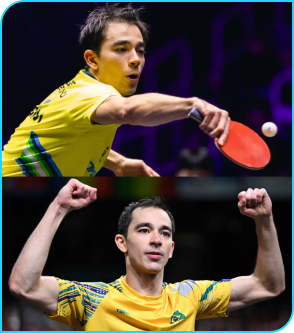

Hugo Calderano
Ele é o primeiro jogador da América Latina a alcançar o Top 10 do Ranking Mundial da ITTF. Em 2024, completou 7 anos seguidos dentro do top 10. Calderano já terminou pelo menos entre os três primeiros em quase todas as competições mais importantes do mundo, como a Copa do Mundo de Tênis de Mesa, a Grande Final do ITTF World Tour, o WTT Champions e o Grand Smash, além de ter sido 5º lugar no Campeonato Mundial de Tênis de Mesa e 4º lugar nos Jogos Olímpicos.
Últimas Conquistas
- 2018 - Indicado como melhor atleta do ano.
- 2018 - Segundo lugar no Aberto do Qatar
- 2017 - Campeão nas duplas no Aberto do Brasil
